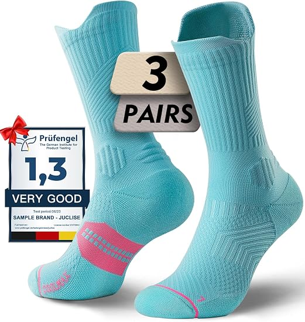
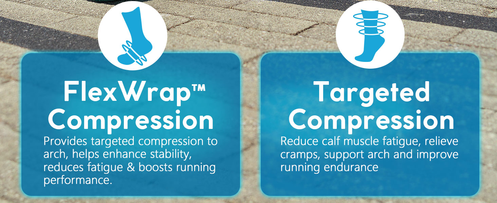

评价规模、材料组合和运动场景足以支撑内容展开。
JUCLISE · COMPRESSION RUNNING SOCKS · US
TikTok市场调研
TikTok市场调研
与内容测试方案
围绕压缩支撑、干爽透气、缓冲防磨和多运动场景，建立可验证的内容方向。

Amazon ASIN · B0D9S3D7VC
2026.09.11客户面谈材料CONFIDENTIAL · FOR DISCUSSION
AMAZON US · 2026-09-11
货架基础不错，
货架基础不错，
内容缺的是可见证明。
$24.993双装页面价
4.5 / 51,189条评价
#80女款跑步袜类目
15–20 mmHg渐进压缩、COOLMAX＋竹纤维混纺、定向缓冲、无缝袜头、左右脚版型与透气网眼。
打开Amazon商品页 ↗
建议测试
先用100条找到
先用100条找到
可复制的购买理由。
压缩回弹、网眼透气、缓冲结构和穿脱动作可直接展示。
恢复、疼痛、循环等表达需要证据与客户确认。
每个节点复盘并取得确认，再进入下一阶段。
消费者不是只买一双袜子
购买发生在三层理由
购买发生在三层理由
同时成立的时候。
包裹、支撑、干爽
跑步、徒步、球类和久站时，希望袜子贴合、不滑落、少摩擦。
拍穿着动作15–20 mmHg＋定向缓冲
压力等级、袜底缓冲、脚背网眼、脚踝保护和左右脚版型需要近景解释。
拍结构差异舒适不等于医疗效果
“支持运动表现”可以测试；疼痛、循环、治疗和保证恢复不能无证据放大。
锁宣称白名单
公开内容样本的共同路径
同质讲功效很拥挤，
同质讲功效很拥挤，
动作＋结构＋场景更适合复测。
公开可见内容集中在跑步、健身、长时间站立、徒步和恢复。十秒内容要把复杂商品信息压缩成一个可见证明。
HOOK穿拉伸、套脚、袜口、左右脚
→
PROOF看网眼、缓冲、脚弓区、脚踝
→
USE跑跑步、徒步、健身、球类、工作靴
→
CTA选尺码、颜色、3双装、Shop或Amazon
可点击原视频
先看内容在卖什么，
先看内容在卖什么，
再决定我们测试什么。
只拆结构，不复制达人素材；公开数字仅作采集时快照。
出海匠｜美国｜近365天｜compression running socks
先看全量，再看低粉，
先看全量，再看低粉，
把研究直接接到100条。
检索结果共6,000条；限定1万粉以内后剩4,429条。我们从全量池抽取5,000条、对低粉池完整筛选，用来回答“什么在卖、谁能复制、哪些结构值得做”。
全量池｜6,000结果 / 抽样5,000
- 主流商品：IRAMY、INNENS等压缩袜
- 主流场景：跑步、久站、足弓/脚踝支撑
- 高频动作：上脚、拉伸、网眼、缓冲、购物车
低粉池｜4,429条（<1万粉）
- 代表样本：@xeniatrana11，7,281粉，90.06万播放，413销量
- 同类商品出现多账号复现，不只依赖单一达人
- 优先复测“问题钩子→结构证明→场景→CTA”
已核验样本
@xeniatrana11｜视频ID 7605323687369231630 ↗ 页面快照：约90.1万播放、1,902赞、43评、806分享、539收藏；达人粉丝7,313。数据来自出海匠页面快照，不作官方结算承诺。
Amazon评论与问答 → 内容假设好评做信任，差评做解释，
好评做信任，差评做解释，
不把体验写成保证。
评论是消费者语言，不是产品功效证书。
非显而易见的机会
最值得测试的不是“更专业”，
最值得测试的不是“更专业”，
而是“更容易看懂”。
轻薄外观，
拉伸后仍有包裹
伸展＋回弹
不许诺恢复，先证明结构。
袜底缓冲与
脚背网眼分区
近景＋触压
用光线、手指压力和鞋内场景说明差异。
跑步、徒步、
球类、久站分开讲
一条一场景
不同时塞入所有运动和功效。
TikTok Shop＋Amazon外溢
两种目标分开测，
两种目标分开测，
不要让一条视频承担全部任务。
TikTok站内成交
- 一眼识别产品与使用场景
- 结构证明＋尺码/颜色/套装信息
- 商品锚点、优惠、库存由店铺承接
- 复盘商品点击、加购、订单与退款
Amazon品牌外溢
- 品牌词：建立Juclise可记忆性
- 搜索意图：compression running socks
- 承接：按账号地区与主页外链权限执行
- 复盘：主页访问、品牌搜索与外部点击
测试假设
先以60条站内购买内容＋40条品牌/Amazon外溢内容起步；面谈确认Shop进度后调整。
100条约10秒 · 六组假设
每一组都对应
每一组都对应
明确的购买问题。
10→50→100分阶段放行。
压缩与支撑
拉伸、回弹、脚弓与小腿包裹。
干爽与透气
网眼近景、运动出汗、材料说明。
缓冲与防磨
脚跟、前掌、袜头、脚踝结构。
运动场景
跑步、徒步、骑行、健身、球类。
舒适与版型
左右脚、袜口、尺码、穿脱。
FAQ与成交
3双装、颜色、清洗、人群与CTA。
20＋18＋18＋16＋14＋14= 100条
第一阶段校准
首10条先把商品真相
首10条先把商品真相
与内容方向一起校准。
01普通袜 vs 分区结构脚背网眼＋袜底缓冲
06跑完最烦的三件事潮、磨、滑；只作问题钩子
0215–20 mmHg在哪里脚弓/小腿图示
07工作靴里的全天场景避免医疗宣称
03袜底按压近景脚跟和前掌缓冲
08左右脚为什么要分L/R版型与贴合
04脚背网眼透光证明透气结构
09三双装如何选颜色套装价值＋轮换
05无缝袜头近距离接缝与摩擦问题
10Shop版与Amazon版CTA同内容不同承接
AI扩场景，真实素材守住商品真相
袜子可以批量生成，
袜子可以批量生成，
结构不能凭空编。
客户需提供主推颜色、包装、尺码表、平铺正反面、上脚、拉伸回弹、网眼、袜底缓冲、袜头、脚踝和清洗素材。
AI人物、运动环境、构图
真实产品细节、穿着、材料
审核外观、结构、宣称、权利

美国市场黄色风险项
能展示结构，
能展示结构，
不等于能承诺结果。
可直接测试
- 事实
- 3双装、颜色、尺码、材料、网眼、缓冲、左右脚
- 场景
- 跑步、徒步、健身、骑行、球类、工作靴
补材料再表达
- 宣称
- 防磨、抗异味、疲劳、恢复、疼痛、循环
- 要求
- 检测、说明书、客户书面确认与准确翻译
不制作
- 禁止
- 虚构体验、医疗治愈、绝对效果、伪造认证
- 发布
- 客户完成AI标签和商业披露最终设置
两条路径，两套指标
先判断内容是否成立，
先判断内容是否成立，
再判断值不值得放大。
十秒内容信号
停留＋完播有效评论、收藏、分享与产品理解。
站内成交信号
点击＋订单商品点击、加购、订单、退款与问题。
外溢信号
主页＋搜索品牌搜索、外链点击和Amazon可见反馈。
不是一次性做完100条
10 → 50 → 100，
10 → 50 → 100，
每一段都要客户放行。
首10条
校准商品还原、方向、画面、语言和标准。
客户确认后放行做到50条
复测比较钩子、场景、证明和CTA。
复盘数据与反馈做到100条
扩展扩大受众、场景、异议和结构覆盖。
形成阶段总结后续合作
再决定按发布能力、数据与内容消耗判断。
不自动进入月包
100-CONTENT TEST PACKAGE¥3,000
100条约10秒AI商品短视频
围绕一个主推SKU完成六组内容测试，按10→50→100分阶段交付、沟通、复盘与确认。
01包含商品事实整理、测试矩阵、100条成片、目标市场语言口播文案、内容台账、基础风险检查。
02待确认SKU/颜色、目标语言、周期、修改轮次、格式、是否寄样。
03不默认包含成片字幕、账号发布、Shop运营、达人/KOC、真人外采、投放与Amazon运营。
04验收数量、规格、可播放、商品信息准确性与约定风格。
合作定位先测试，再决定是否持续批量
不承诺播放、订单、GMV、ROI、爆款或平台过审。
开工前要锁定
商品、渠道、宣称，
商品、渠道、宣称，
三类输入缺一不可。
商品与素材
- 主推颜色、尺码和3双组合
- 平铺、上脚、拉伸、网眼、缓冲、袜头
- 包装、LOGO、洗标与洗护方式
- 客户自有图片/视频的使用权
渠道与商业条件
- 市场：美国与英语版本是否锁定
- Shop：开店时间、价格、库存、履约、退换
- Amazon：品牌词、主页/外链权限与数据回传
- 宣称：检测、说明书、禁用词与书面确认
MEETING DECISIONS
今天确认
今天确认
五件事。
- 01 · SKU首批主推哪一个颜色、尺码与3双组合？
- 02 · CHANNELTikTok Shop节奏，以及Amazon外溢承接路径？
- 03 · CLAIM压缩、材料、防磨与恢复类宣称有哪些证据？
- 04 · MATERIAL能提供哪些真实产品细节、上脚和运动素材？
- 05 · START是否按3000元/100条约10秒、10→50→100启动？
NEXT STEP确认SKU与首10条输入 → 锁定合同与开工时间